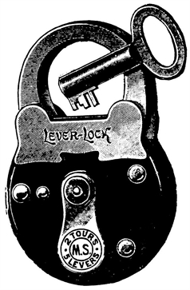

FRUSTRATION
" Quand j'avais 6 ans, ma mère me disait que le bonheur était la clé de la vie. A l'école, ils m'ont demandé ce que je souhaiterais faire quand je serais grand. J'ai écrit que je voulais être heureux... ils m'ont dit que je n'avais rien compris à la question... alors je leur ai dit qu'ils n'avaient rien compris à la vie..." John LENNON

La frustration est une réponse pseudo-émotionnelle à l'opposition. Elle a pour rôle de souligner l'insatisfaction. C'est un état mental caractérisé par un déséquilibre entre un désir et sa réalisation du fait qu'il n'est pas (encore) réalisé. Elle place l’individu dans l’attente de la réalisation de quelque chose qui ne se fera pas ou difficilement. Liée à la colère et la déception (tristesse), son origine peut être en relation avec une résistance perçue par la volonté. Ainsi, plus l'obstruction et la volonté de l'individu sont grandes, plus grande sera la frustration. Mais elle peut également être la résultante d'un conflit inconscient. Dans le cas de figure où elle devient une obsession, elle permet difficilement à l’individu de mener une réflexion claire.
Les causes de la frustration peuvent être internes ou externes. Elle peut surgir lors d'un objectif personnel, à travers des désirs fixés, de conduites ou besoins instinctifs, ou durant une lutte contre certains handicaps marquant la limitation des possibilités d'interaction du sujet avec son environnement. Elle peut alors mener à des difficultés psychologiques, intellectuelles, sociales ou physiques. En générant un conflit intérieur, elle est susceptible d'entraîner une instabilité autour de la confiance en soi et faire émerger des ressentis tels que l’impatience, la colère ou la tristesse. En se perçevant comme un problème "incontrôlé", le frustré se sent souvent impuissant à changer une situation dans laquelle il est impliqué, conduisant ainsi à une frustration plus grande.
Elle peut être comprise également comme le résultat d'un blocage de motivation. L'individu peut réagir de différentes manières. Il peut tenter de l'éviter en tentant de résoudre les problèmes en les surmontant. S'il échoue, le sujet peut devenir frustré et agir d'une manière irrationnelle. La frustration peut être définie comme le résultat de l'impossibilité à accepter ses limites.
La frustration peut être considérée comme un état problématique et peut causer un nombre d'impacts psychiques et sociaux aux dépens de la bonne santé mentale. Généralement, le sujet insatisfait percoit la source de sa frustration au-dessus de ses capacités à y faire face causant ainsi des agirs et des ressentis inadaptés. Cela se traduit par des réactions exagérées voire violentes, une souffrance morale, de l'anxiété, etc. La sensation de blocage et d'impuissance peut générer de l'obsession, de la jalousie, une hyper vigilance, des toxicomanies, un impact sur l'humeur ou encore d'autres comportements limitants.
La frustration comprend donc un déséquilibre entre le désir et sa réalisation. La frustration suspend le temps et implique une attente qui doit être satisfaite. Il y a donc dans le désir la marque d'un manque mais en même temps la dimension d'un projet. La satisfaction d'un désir suppose alors la patience du temps.
Les causes de la frustration peuvent être internes ou externes. Elle peut surgir lors d'un objectif personnel, à travers des désirs fixés, de conduites ou besoins instinctifs, ou durant une lutte contre certains handicaps marquant la limitation des possibilités d'interaction du sujet avec son environnement. Elle peut alors mener à des difficultés psychologiques, intellectuelles, sociales ou physiques. En générant un conflit intérieur, elle est susceptible d'entraîner une instabilité autour de la confiance en soi et faire émerger des ressentis tels que l’impatience, la colère ou la tristesse. En se perçevant comme un problème "incontrôlé", le frustré se sent souvent impuissant à changer une situation dans laquelle il est impliqué, conduisant ainsi à une frustration plus grande.
Elle peut être comprise également comme le résultat d'un blocage de motivation. L'individu peut réagir de différentes manières. Il peut tenter de l'éviter en tentant de résoudre les problèmes en les surmontant. S'il échoue, le sujet peut devenir frustré et agir d'une manière irrationnelle. La frustration peut être définie comme le résultat de l'impossibilité à accepter ses limites.
La frustration peut être considérée comme un état problématique et peut causer un nombre d'impacts psychiques et sociaux aux dépens de la bonne santé mentale. Généralement, le sujet insatisfait percoit la source de sa frustration au-dessus de ses capacités à y faire face causant ainsi des agirs et des ressentis inadaptés. Cela se traduit par des réactions exagérées voire violentes, une souffrance morale, de l'anxiété, etc. La sensation de blocage et d'impuissance peut générer de l'obsession, de la jalousie, une hyper vigilance, des toxicomanies, un impact sur l'humeur ou encore d'autres comportements limitants.
La frustration comprend donc un déséquilibre entre le désir et sa réalisation. La frustration suspend le temps et implique une attente qui doit être satisfaite. Il y a donc dans le désir la marque d'un manque mais en même temps la dimension d'un projet. La satisfaction d'un désir suppose alors la patience du temps.
Cependant le désir qui répond au plaisir est inconscient à l'inverse du besoin, conscient, qui est de l'ordre de l'autoconservation (sécurité, nourrissage, santé, etc.). Et le désir doit à un moment rencontrer la réalité qu'il essaie de modifier par la pose d'exigences, d'injonctions. Il veut modifier la réalité en autre chose qu'elle n'est pas mais qu'elle doit devenir pour la satisfaire, car le désir nait d'un ancien vécu de plaisir et a pour but de reproduire la satisfaction de cette trace de plaisir originel. On ne peut désirer que ce que l'on a connu, en découle ainsi le manque qui est le désir de quelque chose que l'on a pas ou plus. Le désir est donc issu d'un sentiment de manque. Albert SCHOPENHAUEUR exprimait que le fait de vouloir est toujours engendré par le manque, celui-ci étant identifié à la souffrance. La plénitude qui provient de la satisfaction d'un désir ne peut jamais être complète donc l'émergence de la frustration comme indicateur visible. Dans la mesure où si nous étions pleinement satisfait, alors le désir s'éteindrait.
Et nos désirs peuvent être refoulés par notre morale, nos valeurs, notre éducation, notre culture, notre religion. Ils sont en nous et exercent une pression, une pulsion.
C'est au travers le manque qui constitue le désir, l'objet perdu de la première satisfaction, que l'on peut déduire que l'être humain se construit grâce au désir et à la frustration qui en découle.
D'un regard pragmatique, annihiler sa frustration ëst possible en :
Et nos désirs peuvent être refoulés par notre morale, nos valeurs, notre éducation, notre culture, notre religion. Ils sont en nous et exercent une pression, une pulsion.
C'est au travers le manque qui constitue le désir, l'objet perdu de la première satisfaction, que l'on peut déduire que l'être humain se construit grâce au désir et à la frustration qui en découle.
D'un regard pragmatique, annihiler sa frustration ëst possible en :
- soignant sa jalousie, son envie, son orgueil, sa rancune, sa révolte
- utilisant l'humour et la dérision et l'auto dérision
- apprenant à vivre intensément le moment présent et l'accepter tel qu'il est
- assumant, nourrir ses besoins et avoir une vie profonde
- être à l'écoute de ses ressentis et émotions
EN RELATION


RESSENTIMENT
BESOINS
TOXIC Ô MANIE
LEGITIMITE
PEUR
IDEAL
(in) CONFORT